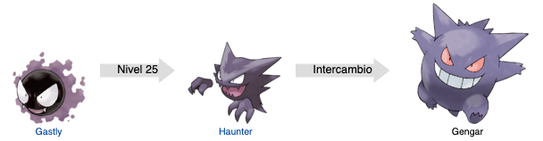

Gengar Nº094

Etimología
- Su nombre en japonés y occidental deriva de Doppelgänger, el doble fantasmagórico de una persona viva y de Edgar Allan Poe.
- Su nombre francés, Ectoplasma, deriva de la palabra ectoplasme (ectoplasma).
Biología
Gengar está basado en el concepto del Doppelgänger y en la gente sombra.
Gengar es un Pokémon con extremidades pequeñas. Tiene una personalidad siniestra y tenebrosa, sobre todo en estado salvaje.
Les gusta fingir que son una sombra, por la noche, para sorprender a la gente o a Pokémon perdidos. Cuando una persona se acerca a ellos puede sentir un aura helada que los rodea ya que roban el calor de su alrededor. Como otros Pokémon de tipo fantasma, posee la tétrica pero igualmente enigmática cualidad de que siempre se le ve sonriente, de una manera siniestra y espeluznante aun cuando está inconsciente o es derrotado en combate, como si se burlara. Se cree que es una forma que tiene para intimidar a sus rivales haciéndoles creer que sin importar cuantos golpes reciba siempre se encuentra en un buen estado, aunque en realidad no sea así.
Aunque tenga piernas Gengar puede usar la levitación. A pesar de su maldad puede llegar a ser un buen compañero para un entrenador con sus mismas características y personalidad. Dicen que por las noches invocan espíritus malignos para que a todo el mundo le ocurran desgracias e infortunios.
Evoluciones

Curiosidades
- Gengar fue diseñado por Ken Sugimori, debido a su simplicidad es uno de sus Pokémon favoritos.
- Gengar Gigamax fue diseñado por James Turner.
- Es el primer Pokémon que aparece en el anime.
- En la Pokédex de Pokémon X y Pokémon Y, Mega-Gengar es el único Pokémon al que no se puede girar para verlo desde abajo ni desde arriba.
- En la sexta generación, Gengar era el único Pokémon con la habilidad levitación que no aparece flotando en su animación.
- En la primera generación, la vista de la espalda de Gengar, pierde todo rastro de las púas que posee en su espalda.
- A pesar de ser tipo veneno, antes de Pokémon: Let's Go, Pikachu! y Pokémon: Let's Go, Eevee! no aprendía ningún movimiento de tipo veneno subiendo de nivel.
- La forma variocolor de Gengar es diferente en el anime con respecto a como es en los juegos, pasando de ser casi idéntica a la normal especialmente en las últimas generaciones a tener una tonalidad mucho más blanca. En la imagen situada a la derecha puede verse que guarda una mayor similitud con su forma megaevolucionada y con su Gigantamax.